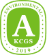
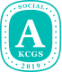
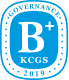

SUSTAINABILITY
ESG Ratings
| Year | Environment | Social | Governance | Total |
|---|---|---|---|---|
| 2024 |

|

|

|

|
| 2023 |  |  |  |
KCGS is the most reputable ESG evaluation and proxy analysis institution in Korea, conducting assessments on listed companies in the areas of Environment (E), Social (S), and Governance (G) / The evaluation results are assigned in 7 grades: S, A+, A, B+, B, C, D
| Year | ESG Risk |
|---|---|
| 2024 | 17.8 Point |
SUSTAINALYTICS is a subsidiary of the U.S. financial information firm Morningstar which evaluates and publishes the ESG risk scores of over 15,000 companies across 42 industries worldwide every year. The ESG risk assessment is calculated using a score ranging from 0 to 50 and a 5-level grading system. A lower score and grade indicate lower ESG risks for the company.
| Year | FTSE4Good Index |
|---|---|
| 2024 | Included in the 'Retailers' ICB Category |
The FTSE4Good Index is an ESG evaluation index published by FTSE Russell, a subsidiary of the London Stock Exchange. It assesses the ESG performance of around 8,000 companies globally. Known for its strict evaluation criteria, the index requires companies to meet standards in over 300 detailed assessment categories, including Environmental (E), Social (S), and Governance (G) factors. If a company fails to meet even one of these criteria, it cannot be included in the index.